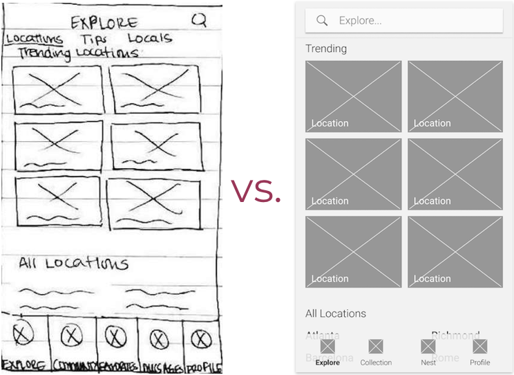
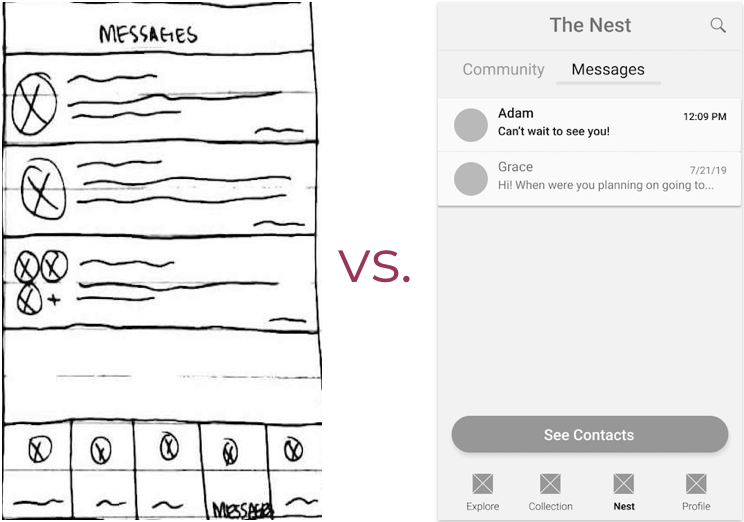
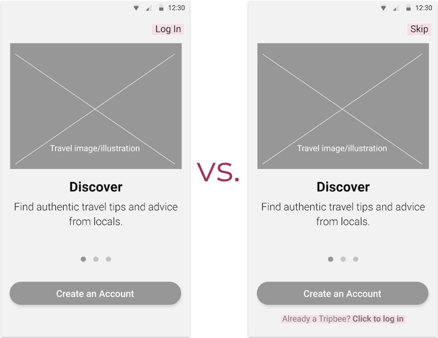
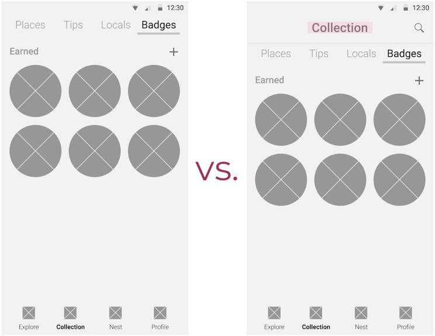

Problem
Everyone loves to travel or dreams of a vacation away from everyday life. But finding reliable reviews and worthwhile places to visit can feel daunting and time-consuming.
Solution
Tripbee is a fast and easy way to find authentic travel tips from real locals based on your needs and interests. You can connect with locals directly for advice, find travel buddies, or get a private tour. No need to sift through hundreds of reviews and articles for travel inspiration!
Project Kickoff
This project was born from my passion for travel. Understanding the struggles of traveling solo as a female sparked an idea to help people find travel buddies who don’t want to travel solo. Prior to starting the research, I drew up key features for the MVP (minimum viable product).
MVP Features:
- Find travel buddies or groups
- Share experiences and places
- Find travel advice
- Plan trips with itineraries
Research
User Surveys
To validate my hypothesis, I deployed user surveys to ask:
- General questions about travel
- How do you plan your trips?
- What resources do you use?
- How do you feel about traveling with an online travel buddy?
Key Findings
Motivators:
- 87% like to sightsee / enjoy local cuisine
Connecting:
- 33% would never travel with someone they meet online
- 80% would meet up with travelers in their city
Resources:
- 70-80% use travel guides, blogs or TripAdvisor
Concerns:
- 40% worry about budget, language barriers, lost luggage
- 100% have safety concerns with an online travel partner
Pain points:
- Disorganization
- Outdated information
- Impersonal / lack of community
A problem identified
Contrary to my initial assumptions, these findings told me that too many people had reservations about traveling with someone they meet online. These concerns were too big to ignore, and I knew that creating an app focused on finding travel buddies would not work.
A change in approach
I saw a pattern in the free responses from the survey and the interviews that I conducted. People voluntarily stated that they wished to find travel advice from locals for less touristy, hidden spots but that these were hard to find. Basically, “I want to do what the locals do!”
I decided to switch the app’s main features based on this revelation.
New MVP Features:
- Provide users with travel advice from locals
- Connect users with locals
- Users can become guides
- Users can share their experiences and favorite spots
Competitive Analysis
To learn how competitors go about the problem, I conducted an analysis on three travel apps:
Spotted by Locals offers updated, offline tips from hand-picked locals for $3.99 per city guide. I posture that users would use this app the most when they’re in that city on the go but not so much to plan a trip.
Withlocals focuses more on experiences and connecting users with locals for advice or private tours.
Jetzy connects like-minded people with tips and experiences. They have a unique reward system for users. No clear visual explanation of how people can connect with other users, however.
What they did right
The app design for Jetzy and Withlocals looked modern and sophisticated. They used nice, professional images and clean designs.
What they could improve
Increase contrast between white text and background images, a common accessibility issue I found in the landing pages. Spotted by Locals design looked outdated and busy.
Takeaways:
- Come up with a clean, modern design with great usability, accessibility and clear explanation of app’s features
- Gamify the app using a badge-collecting system to hopefully increase user retention since users said they usually make a web search to find new travel destinations
Information Architecture
User Personas
What would the goals and frustrations of our potential users be? To answer this question, I created user personas inspired by the user research and interviews.
Susan
Business Owner, 43
Vancouver, Canada
Goals:
- Find unique, family-friendly places
- Faster, more efficient planning
Concerns:
- Too much info to go through
- Family-friendly places lack culture
Eric
Data Scientist, 32
Palo Alto, CA
Goals:
- Rely less on online resources and apps
- Find local hidden gems
- Connect with locals
Concerns:
- Time-consuming research
- Overhyped places
- Language barriers
Grace
Student, 24
Chicago, IL
Goals:
- Find and connect with trustworthy locals
- Find more budget-friendly experiences and travel options
Concerns:
- Going over budget
- Safety
User Stories
What tasks would users want to complete using this app? I wrote user stories to define the high priority to low priority tasks.
High priority tasks:
- I want to search for a location
- I want to find tips or locals at a location
- I want to message someone
- I want to sign up for an account or log in
Medium priority tasks:
- I want to filter search results
- I want to filter a list of tips or locals
- I want to view a local’s profile
- I want to view my collection
- I want to add a virtual badge to my collection
User Flows
Taking the priority tasks from the user stories, I drew up user flows to map out the steps for each of the following flows:
- Signing up
- Logging in
- Searching and using filter
- Exploring locations, tips and locals
- Sending a message
Content Strategy
At this point I had all the information I needed to start designing but no actual content or layout in mind. I drafted a content strategy for each screen to make the wireframing process easier.
Wireframes
With the content mapped out, I roughly sketched out the wireframes using pen and paper. Then I used my sketches as a blueprint to create digital wireframes.


The design from sketch to digital didn’t change much but I had to go through a few iterations to get to the final wireframes after consulting senior designers and my peers.

Branding
Brand identity building
First, I listed any words I could think of that were related to travel and the app mission. Important words were “fun”, “inspiring”, “community”, and “adventure”.
I created a mindmap of the words surrounding travel to help in creating the logo and the name.
I sketched possible logos that had to do with travel. The first round of sketches didn’t feel strong or unique. At this point, I didn’t settle on a name either.
How Tripbee came to be
I researched what animals convey a meaning of community and finally came upon bees. This theme inspired a few cool names. I sketched honeycombs and bees to match the names. People preferred the “Tripbee” logo over “Culturebee” or “Spotbee”. That was that!
Final Logo
I created new sketches for Tripbee and then iterated on digital versions. We settled on option 1 as a result of preference testing.

Style Guide
For the style guide, I came up with a color palette that matches the theme of yellow bumble bees and blue flowers.
Mockups
Using the wireframes and branding as guides, I designed hi-fi mockups to bring the app to life and designed many iterations based on the feedback from senior designers.
Changes made:
Before: Uninteresting landing page with too much white space
After: More cohesive landing page with good spacing and headers
Before: Honeycomb badges that don’t explain how they’re collected
After: Badges with title and stars to signify how many need to be collected
Prototype
With the previously mentioned user stories, flows and personas in mind, I created a clickable prototype for each of the tasks that I felt were crucial for the MVP.
Usability Testing
I tested the usability of the app with 4 people and asked them to complete the following tasks:
- Signing up for an account
- Conducting a search with filters
- Checking in to a place to earn a badge
- Sending a local a message
Changes made after usability testing:
More obvious app navigation bar
Why? Test participants didn’t always immediately know what screen they were looking at. Usability testers liked the bottom option better.
Filter task moved to end of search flow
Why? A user tried to type the filter categories in the search box instead of clicking on the filter icon. Others stated they apply a filter after running a search if needed.
More refined Explore screen
Why? Users took a few seconds to figure out they were already on the Explore screen. No clear call to action.
Conclusion
Problem solved?
Initially my goal was to create what is essentially a travel app akin to a social dating app, but I realized that people are not yet ready to travel with total strangers they meet online, only just dating for now. This surprising realization led me down the path of making Tripbee, which I find even more exciting than the initial project and useful for the users who wanted to learn more about secret spots from locals rather than the tourist traps.
Is a project ever really finished?
Thinking back to the survey results, I remember users like to join in on activities as much as they like to eat and sightsee. If I had more time to work on this project, I would love to add experiences as a feature (such as scuba diving or dining at a local’s home) to help users find interesting things to do in order to help bring about even more of a feeling of community and inspire culture learning.
It would be fun to incorporate machine learning into the search option to help users explore places even faster.